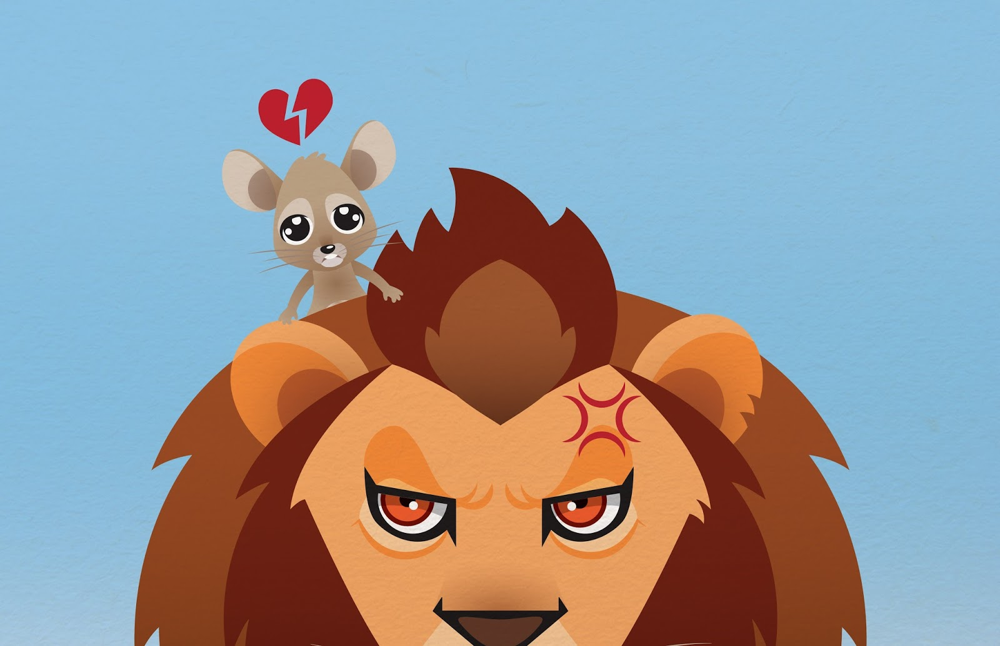

Malhumorado, el león lo agarró de la cola y, cuando estaba por meterlo en su boca para comérselo,
escuchó la fina vocecita del ratón que le pedía que se apiadara de él. El animalito le prometió que,
si no lo comía, algún día se lo pagaría. Esta promesa dibujó una sonrisa en la cara del león.
Se preguntó cómo ese diminuto animalito podría ayudarlo algún día. Así y todo, le perdonó la vida.
